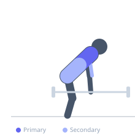
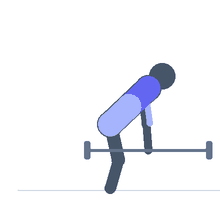

Exercise guide / Underhand Barbell Row / Yates Row
Underhand Barbell Row / Yates Row
The underhand barbell row, often called the Yates Row after bodybuilder Dorian Yates, uses a supinated (palms-up) grip and a more upright torso angle than a standard Pendlay or overhand row. The supinated grip increases bicep recruitment and shifts lat activation toward the lower fibers, while the more erect posture reduces lower back stress. The elbows travel closer to the body compared to an overhand row.
Primary muscles
latissimus dorsi
rhomboid major
Secondary muscles
biceps brachii long head
biceps brachii short head
trapezius middle
erector spinae
Stabilizers
transverse abdominis
internal oblique
Equipment
Standard Barbell
Optional
Lifting Straps


Starting position
- Stand with feet hip-width apart. Hold a barbell with a supinated (underhand) grip at approximately shoulder width. Hinge at the hips to 45-70 degrees of forward lean — more upright than a Pendlay row.
Setup
- Set the barbell on the floor or in a rack at mid-shin height. Maintain a neutral spine with shoulders pulled back.
Steps
- Step 1: Hold the bar with an underhand grip, torso between 45 and 70 degrees from vertical.
- Step 2: Brace the core and retract the scapulae slightly before each rep.
- Step 3: Pull the bar toward the lower abdomen or navel, keeping elbows close to the torso.
- Step 4: At the top, squeeze the lats and rhomboids hard.
- Step 5: Lower the bar under control until arms are extended.
Coaching cues
- Palms up, elbows in
- Pull to the belly button
- More upright than a standard row
Breathing
- Inhale before the pull, exhale during the concentric phase, inhale on the descent.
Range of motion
- Full arm extension at the bottom to bar touching lower abdomen at the top.
Tempo
- 2-1-2-0
Common mistakes
- Using excessive body swing to initiate the row
- Gripping too wide, reducing bicep and lower lat activation
- Allowing the torso to drop too parallel, shifting the exercise pattern
Safety
- The supinated grip can place wrist stress at heavy loads — use lifting straps if grip becomes limiting
- Maintain a neutral spine and avoid rounding the lower back
Training
- strength: 4–8 reps
- hypertrophy: 8–12 reps
- strength: 4–5 sets
- hypertrophy: 3–4 sets
- Rest: {'strength': 180, 'hypertrophy': 90}